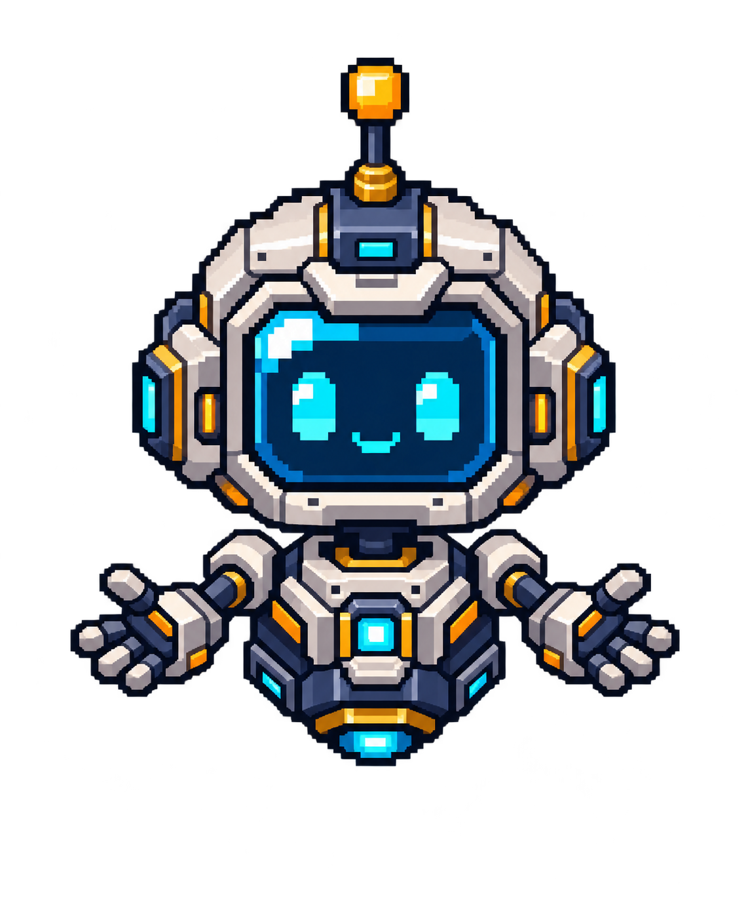

Starfall+
Solve. Build. Defend.
A colorful pixel-art maths adventure. Explore your spaceship, improve your defenses and stop swarms of elemental meteors—with a friendly Bot beside you.
A macOS development build. Mobile versions are still in development. Parent accounts use a separate learner nickname.
